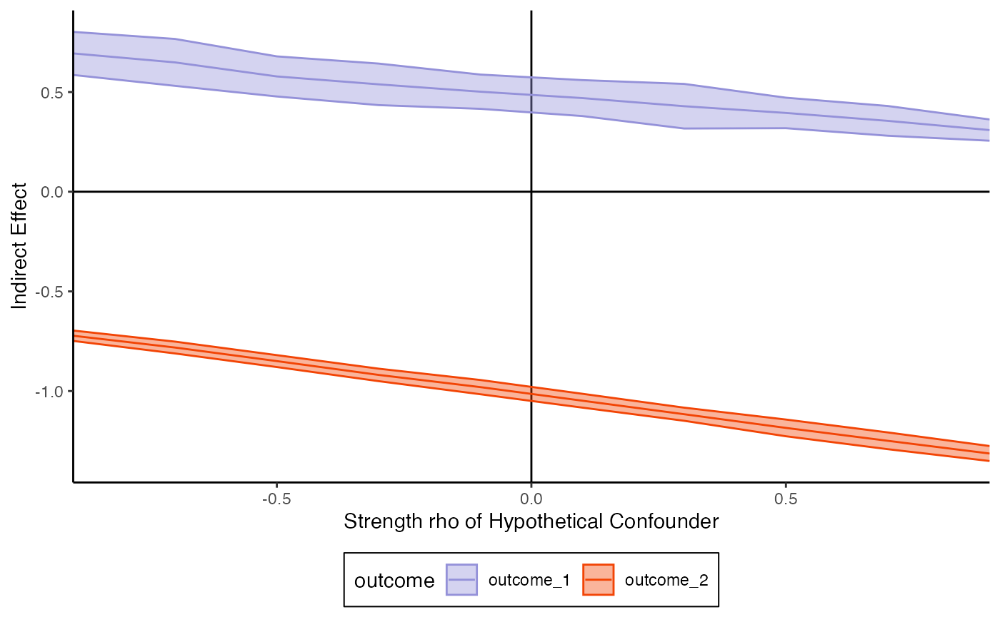
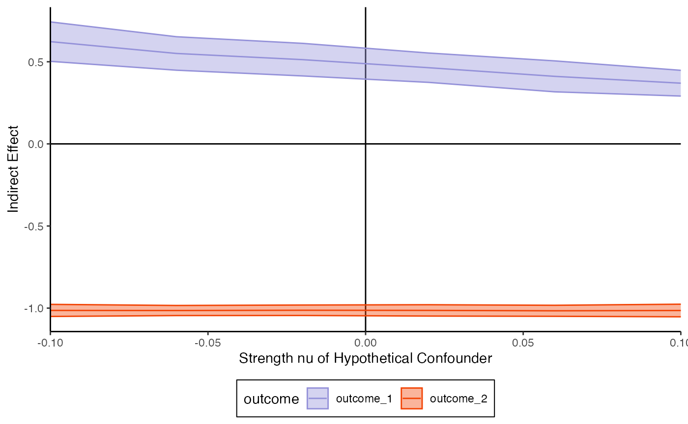
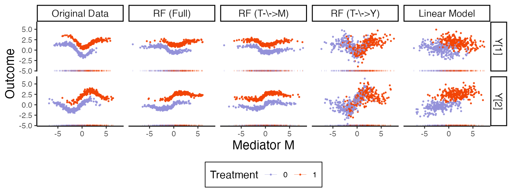
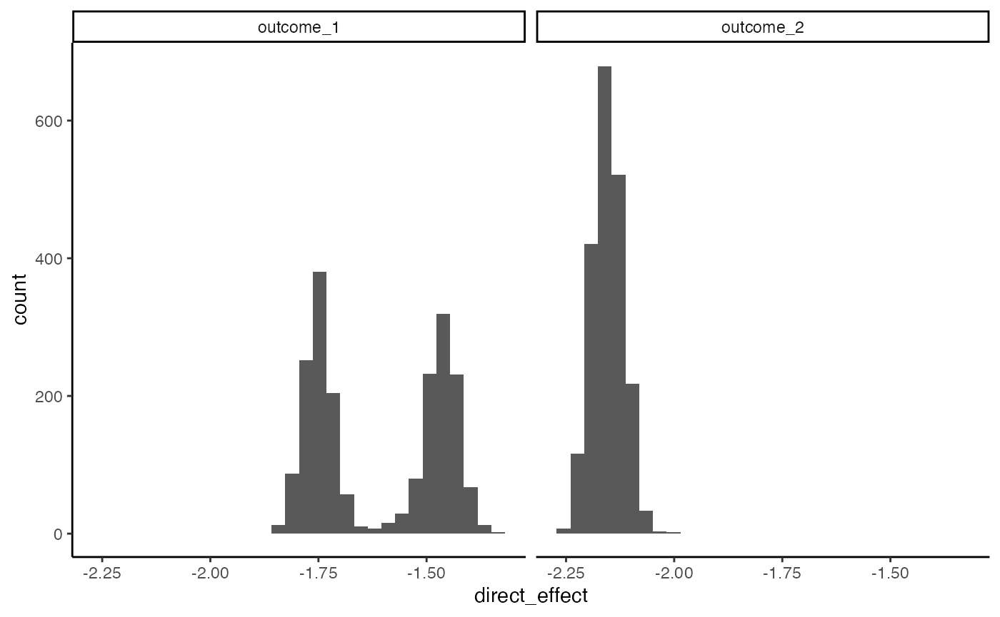
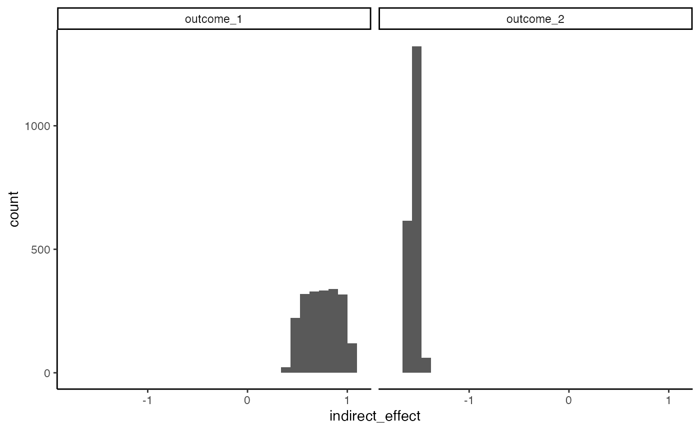

This vignette gives a simplified example similar to the “Quick Start with Random Data,” except in this simulated dataset, there are true direct and indirect effects. The data are low dimensional, which also makes it easy to visualize our model’s behavior and the effect of various alterations. Before discussing data and models, let’s load libraries and define helper functions that will be used for reorganizing the data later in this vignette.
library(glue)
library(tidyverse)
library(multimedia)
set.seed(20240111)
#' Helper to plot the real data
plot_exper <- function(fit, profile) {
pivot_samples(fit, profile) |>
ggplot() +
geom_point(aes(mediator, value, col = factor(treatment))) +
facet_grid(. ~ outcome) +
theme(legend.position = "bottom")
}
#' Convert a SummarizedExperiment to long form
pivot_samples <- function(fit, profile) {
exper_sample <- sample(fit, profile = profile)
outcomes(exper_sample) |>
bind_cols(mediators(exper_sample), t_outcome) |>
pivot_longer(starts_with("outcome"), names_to = "outcome")
}We will consdier a mediation analysis with two outcomes and a single mediator. The toy dataset below is included in the package – you can vary the number of samples and true direct effect size by passing in arguments.
the treatment, mediator, and outcomes. We use random spline functions for the direct effect.
xy_data <- demo_spline()
xy_long <- list(
true = pivot_longer(xy_data, starts_with("outcome"), names_to = "outcome")
)The block below estimates a random forest model on these randomly
generated data (after first converting them into an object of class
mediation_data). We can vary ranger parameters
using the arguments to rf_model().
exper <- mediation_data(
xy_data, starts_with("outcome"), "treatment", "mediator"
)
fit <- multimedia(
exper,
outcome_estimator = rf_model(num.trees = 1e3)
) |>
estimate(exper)Let’s look at the estimated effects.
direct_effect(fit) |>
effect_summary()#> # A tibble: 2 × 2
#> outcome direct_effect
#>
#> 1 outcome_1 -1.57
#> 2 outcome_2 -2.16
indirect_overall(fit) |>
effect_summary()#> # A tibble: 2 × 2
#> outcome indirect_effect
#>
#> 1 outcome_1 0.732
#> 2 outcome_2 -1.53Mediation analysis depends on untestable assumptions on the absence of confounders that influence both the mediators and outcome. For this reason, we can run a sensitivity analysis: How strong would the confounder have to be before we would observe a flipped indirect effect estimate?
confound_ix <- expand.grid(mediator = 1, outcome = 1:2)
# sensitivity_curve <- sensitivity(fit, exper, confound_ix)
sensitivity_curve <- read_csv("https://go.wisc.edu/0xcyr1")
plot_sensitivity(sensitivity_curve)
perturb <- matrix(
c(
0, 3, 0,
3, 0, 0,
0, 0, 0
),
nrow = 3, byrow = TRUE
)
# sensitivity_curve <- sensitivity_perturb(fit, exper, perturb)
sensitivity_curve <- read_csv("https://go.wisc.edu/75mz1b")
plot_sensitivity(sensitivity_curve, x_var = "nu")
If we want to look at samples at new treatment assignments, we have
to first construct a new treatment profile. We can accomplish this using
the setup_profile object.
t_mediator <- tibble(treatment = factor(rep(0:1, each = nrow(exper) / 2)))
t_outcome <- tibble(treatment = factor(rep(0:1, each = nrow(exper) / 2)))
profile <- setup_profile(fit, t_mediator, t_outcome)
xy_long[["fitted"]] <- pivot_samples(fit, profile)Let’s estimate three altered models. The first two nullify the effects in the mediation and outcome models, respectively. The third assumes a linear, rather than random forest, outcome model.
altered_m <- nullify(fit, "T->M") |>
estimate(exper)
altered_ty <- nullify(fit, "T->Y") |>
estimate(exper)
fit_lm <- multimedia(
exper,
outcome_estimator = lm_model()
) |>
estimate(exper)We can sample from these models and organize the results into one
long data.frame. The function pivot_samples is defined at
the top of the script.
pretty_labels <- c(
"Original Data", "RF (Full)", "RF (T-\\->M)", "RF (T-\\->Y)", "Linear Model"
)
xy_long <- c(
xy_long,
list(
altered_m = pivot_samples(altered_m, profile),
altered_ty = pivot_samples(altered_ty, profile),
linear = pivot_samples(fit_lm, profile)
)
) |>
bind_rows(.id = "fit_type") |>
mutate(
fit_type = case_when(
fit_type == "linear" ~ "Linear Model",
fit_type == "true" ~ "Original Data",
fit_type == "fitted" ~ "RF (Full)",
fit_type == "altered_ty" ~ "RF (T-\\->Y)",
fit_type == "altered_m" ~ "RF (T-\\->M)"
),
fit_type = factor(fit_type, levels = pretty_labels),
outcome = case_when(
outcome == "outcome_1" ~ "Y[1]",
outcome == "outcome_2" ~ "Y[2]"
)
)The figure below compares the original data and model with the
various nullified versions, using the combined xy_long
dataset constructed above.
xy_long |>
sample_frac(size = 0.1) |>
ggplot(aes(mediator, col = treatment)) +
geom_point(aes(y = value), size = 0.4, alpha = 0.9) +
geom_rug(alpha = 0.99, linewidth = 0.1) +
facet_grid(outcome ~ fit_type) +
labs(x = expression("Mediator M"), y = "Outcome", col = "Treatment") +
theme(
strip.text = element_text(size = 11),
axis.title = element_text(size = 14),
legend.title = element_text(size = 12)
)
We can calculate bootstrap confidence intervals for the direct and overall indirect effects using the block below.
fs <- list(direct_effect = direct_effect, indirect_overall = indirect_overall)
# bootstraps <- bootstrap(fit, exper, fs = fs)
bootstraps <- readRDS(url("https://go.wisc.edu/977l04"))
ggplot(bootstraps$direct_effect) +
geom_histogram(aes(direct_effect)) +
facet_wrap(~outcome)
ggplot(bootstraps$indirect_overall) +
geom_histogram(aes(indirect_effect)) +
facet_wrap(~outcome)
#> R version 4.4.1 Patched (2024-08-21 r87049)
#> Platform: aarch64-apple-darwin20
#> Running under: macOS Sonoma 14.5
#>
#> Matrix products: default
#> BLAS: /Library/Frameworks/R.framework/Versions/4.4-arm64/Resources/lib/libRblas.0.dylib
#> LAPACK: /Library/Frameworks/R.framework/Versions/4.4-arm64/Resources/lib/libRlapack.dylib; LAPACK version 3.12.0
#>
#> locale:
#> [1] en_US.UTF-8/en_US.UTF-8/en_US.UTF-8/C/en_US.UTF-8/en_US.UTF-8
#>
#> time zone: America/Chicago
#> tzcode source: internal
#>
#> attached base packages:
#> [1] stats graphics grDevices utils datasets methods base
#>
#> other attached packages:
#> [1] multimedia_0.2.0 tidyselect_1.2.1 ranger_0.16.0 glmnetUtils_1.1.9
#> [5] brms_2.21.0 Rcpp_1.0.13 lubridate_1.9.3 forcats_1.0.0
#> [9] stringr_1.5.1 dplyr_1.1.4 purrr_1.0.2 readr_2.1.5
#> [13] tidyr_1.3.1 tibble_3.2.1 tidyverse_2.0.0 glue_1.7.0
#> [17] ggplot2_3.5.1
#>
#> loaded via a namespace (and not attached):
#> [1] tensorA_0.36.2.1 jsonlite_1.8.8
#> [3] shape_1.4.6.1 magrittr_2.0.3
#> [5] TH.data_1.1-2 estimability_1.5.1
#> [7] farver_2.1.2 rmarkdown_2.28
#> [9] fs_1.6.4 zlibbioc_1.51.1
#> [11] ragg_1.3.2 vctrs_0.6.5
#> [13] multtest_2.61.0 htmltools_0.5.8.1
#> [15] S4Arrays_1.5.7 progress_1.2.3
#> [17] distributional_0.4.0 curl_5.2.2
#> [19] Rhdf5lib_1.27.0 SparseArray_1.5.31
#> [21] rhdf5_2.49.0 sass_0.4.9
#> [23] StanHeaders_2.32.10 bslib_0.8.0
#> [25] htmlwidgets_1.6.4 desc_1.4.3
#> [27] plyr_1.8.9 sandwich_3.1-0
#> [29] emmeans_1.10.4 zoo_1.8-12
#> [31] cachem_1.1.0 igraph_2.0.3
#> [33] lifecycle_1.0.4 iterators_1.0.14
#> [35] pkgconfig_2.0.3 Matrix_1.7-0
#> [37] R6_2.5.1 fastmap_1.2.0
#> [39] GenomeInfoDbData_1.2.12 MatrixGenerics_1.17.0
#> [41] digest_0.6.37 colorspace_2.1-1
#> [43] patchwork_1.2.0 S4Vectors_0.43.2
#> [45] textshaping_0.4.0 miniLNM_0.1.0
#> [47] GenomicRanges_1.57.1 vegan_2.6-8
#> [49] labeling_0.4.3 timechange_0.3.0
#> [51] fansi_1.0.6 httr_1.4.7
#> [53] abind_1.4-5 mgcv_1.9-1
#> [55] compiler_4.4.1 bit64_4.0.5
#> [57] withr_3.0.1 backports_1.5.0
#> [59] inline_0.3.19 highr_0.11
#> [61] QuickJSR_1.3.1 pkgbuild_1.4.4
#> [63] MASS_7.3-61 DelayedArray_0.31.11
#> [65] biomformat_1.33.0 loo_2.8.0
#> [67] permute_0.9-7 tools_4.4.1
#> [69] ape_5.8 nlme_3.1-166
#> [71] rhdf5filters_1.17.0 grid_4.4.1
#> [73] checkmate_2.3.2 cluster_2.1.6
#> [75] reshape2_1.4.4 ade4_1.7-22
#> [77] generics_0.1.3 operator.tools_1.6.3
#> [79] gtable_0.3.5 tzdb_0.4.0
#> [81] formula.tools_1.7.1 data.table_1.16.0
#> [83] hms_1.1.3 tidygraph_1.3.1
#> [85] utf8_1.2.4 XVector_0.45.0
#> [87] BiocGenerics_0.51.1 foreach_1.5.2
#> [89] pillar_1.9.0 vroom_1.6.5
#> [91] posterior_1.6.0 splines_4.4.1
#> [93] lattice_0.22-6 bit_4.0.5
#> [95] survival_3.7-0 Biostrings_2.73.1
#> [97] knitr_1.48 gridExtra_2.3
#> [99] V8_5.0.0 phyloseq_1.49.0
#> [101] IRanges_2.39.2 SummarizedExperiment_1.35.1
#> [103] stats4_4.4.1 xfun_0.47
#> [105] bridgesampling_1.1-2 Biobase_2.65.1
#> [107] matrixStats_1.4.0 rstan_2.32.6
#> [109] stringi_1.8.4 UCSC.utils_1.1.0
#> [111] yaml_2.3.10 evaluate_0.24.0
#> [113] codetools_0.2-20 cli_3.6.3
#> [115] RcppParallel_5.1.9 xtable_1.8-4
#> [117] systemfonts_1.1.0 munsell_0.5.1
#> [119] jquerylib_0.1.4 GenomeInfoDb_1.41.1
#> [121] coda_0.19-4.1 parallel_4.4.1
#> [123] rstantools_2.4.0 pkgdown_2.1.0
#> [125] prettyunits_1.2.0 bayesplot_1.11.1
#> [127] Brobdingnag_1.2-9 glmnet_4.1-8
#> [129] mvtnorm_1.3-1 scales_1.3.0
#> [131] crayon_1.5.3 rlang_1.1.4
#> [133] multcomp_1.4-26